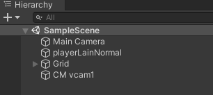
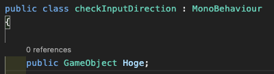
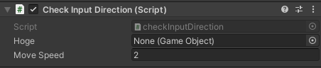

Unityのスクリプトは、「アタッチされているゲームオブジェクトの参照」だけではなく、同一のシーンに存在していてスクリプトがアタッチされていないゲームオブジェクトについても参照が可能です。方法はいくつかあります。
GameObject.Find()を用いて名称からゲームオブジェクトを参照する。GameObject.FindGameObjectWithTag()を使用する。public Gameobject Hogeと宣言し、Inspectorウィンドウにて参照先のゲームオブジェクトを指定する。それぞれのメリットやデメリットについて見てます。
GameObject.Find()を用いるあるシーンにて「Hoge」という名前のゲームオブジェクトがあるとします。ここで言う「名前」とは、Hierarchyウィンドウで表示されている文字列とします。

上記の場合、Main CameraやCM vcam1のことを指します。これらの名称を用いて、参照したいゲームオブジェクトを指定するのがGameObject.Find()です。
GameObject hoge = GameObject.Find("Hoge");上記の方法で参照すれば、以降は変数hogeを使ってゲームオブジェクトに対し処理が可能になります。Hierarchyウィンドウ上で表示されている名称をコードでそのまま指定できるので、取得したいオブジェクトが直感的に指定できることが最大の強みです。
注意点は、この処理動作が重めであること。Update()の中で何回も実行するのは避けて、Start()の中で変数に確保しておくべきでしょう。
GameObject.FindGameObjectWithTag()を用いるUnityはゲームオブジェクトに対して「Tag」を指定できます。Tagとは、1つ以上のゲームオブジェクトに対して割り当てることができる参照ラベルです。たとえば、プレイヤーが制御するオブジェクトには「Player」を、プレイヤーが制御しないNPCについては「NPC」を定義できます。他に、あるシーン内で獲得できるさまざまなアイテムについては、「Item」というタグを定義できるでしょう。
このように設定されたタグは、スクリプトによるゲームオブジェクト参照時に役立ちます。たとえばNPC全体に対して何らかの処理を行いたい場合、すべてのNPCオブジェクトを個別に指定するのは大変ですが、NPCに対しタグを設定していれば「NPCというタグを持つオブジェクト」という簡単な指定で処理対象を限定できます。
GameObject player = GameObject.FindGameObjectWithTag("Player");上記では、「Player」というタグがついたゲームオブジェクトを参照しています。
ただし、GameObject.FindGameObjectWithTag()が利用できるのは対象のゲームオブジェクトが1つの場合です。1つのタグが複数のゲームオブジェクトに設定されている場合、GameObject.FindGameObjectsWithTag()を利用します。非常に似たメソッド名ですが、複数のゲームオブジェクトを検索できるほうはGameObjectsと複数形のメソッド名になっています。
GameObject[] items = GameObject.FindGameObjectsWithTag("Item");GameObject.FindGameObjectsWithTag()は、戻り値が配列になっているため代入する変数も配列で宣言する必要がある点に注意。
スクリプト内で宣言したパブリック変数は、Inspectorウィンドウで値を設定できます。これを利用し、ゲームオブジェクトをパブリック変数として宣言しておいて、Inspectorウィンドウで参照先のゲームオブジェクトを直接指定する方法があります。複数指定するのは手間ですが、1つ2つくらいならこの方法で指定しても良いかもしれません。
Find()メソッドなどを用いるケースとは異なり、対象のゲームオブジェクトをInspectorウィンドウで指定しているため、参照先を検索する処理を実行する必要がありません。つまり、動作が軽いことこそ、この方法の最大のメリットです。それと、Find()などのメソッドは参照先が非アクティブの場合指定できません。ですが、この方法はアクティブあるいは非アクティブに関係なく、とりあえず存在さえしていれば指定可能です。アクティブかどうかを考慮する必要がないことも、この方法のメリットの1つです。

あるスクリプトで上記のようにパブリック変数を宣言します。

すると、先ほどのスクリプトがアタッチされているゲームオブジェクトを選択した際に表示されるInspectorウィンドウで、スクリプトで宣言したパブリック変数に対してどんなオブジェクトをアタッチするかの項目が増えます。この枠に、参照したいオブジェクトをアタッチしてやればいいわけです。
デメリットとしては、スクリプトだけ見ると具体的にどんなオブジェクトがアタッチされているかがはっきりしないことです。ただ、これはコメントで参照先をメモしておくなどすれば、一応は回避できます。それと、参照したい先を手動設定するため、対象が複数あるとだと手間なのも割と大きめなデメリット。この場合は、ゲームオブジェクトにタグを付けて管理したほうがいいでしょう。
Unityにおいて、ゲームオブジェクトを参照する方法は複数存在しますが、それぞれについてメリットとデメリットが存在します。うまく使い分けたいものです。